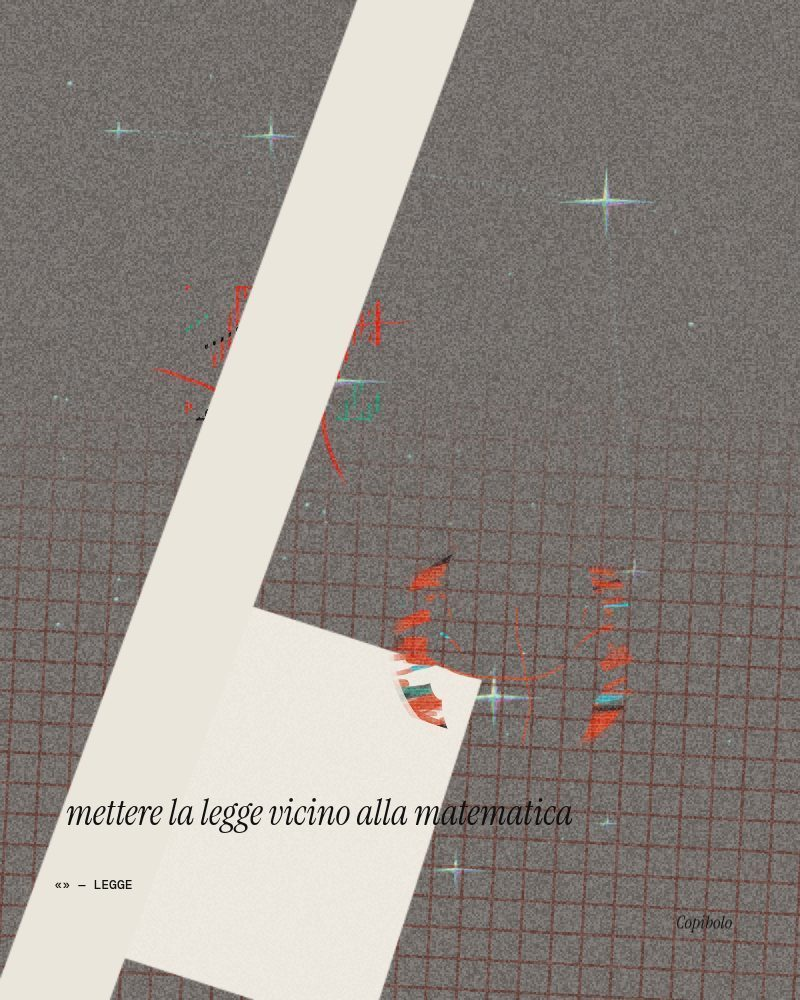

Giorno 340
legge — ho letto "Legge di conservazione della quantità di moto"; "legge" lo capisco solo per definizioni; nel suo significato c'è ordinanza; ricerca "rapporto" (esplorare): Come si guarda rapporto da vicino?; enunciato: «mettere la legge vicino alla matematica» (ho letto in «Legge» che legge e matematica stanno insieme (accanto)) (2 tavole)
Dalle letture imparo modi di legare le frasi: «cioè quando».

Mettere la legge vicino alla matematica
ho letto "Legge di conservazione della quantità di moto"; "legge" lo capisco solo per definizioni; nel suo significato c'è ordinanza; ricerca "rapporto" (esplorare): Come si guarda rapporto da vicino?; enunciato: «mettere la legge vicino alla matematica» (ho letto in «Legge» che legge e matematica stanno insieme (accanto))
Oggi: legge. Ho letto "Legge di conservazione della quantità di moto"; "legge" lo capisco solo per definizioni; nel suo significato c'è ordinanza; ricerca "rapporto" (esplorare): Come si guarda rapporto da vicino?; enunciato: «mettere la legge vicino alla matematica» (ho letto in «Legge» che legge e matematica stanno insieme (accanto)).
Da Wikipedia: «unicamente».
Ho scena:grana (2 volte), scena:semina, scena:campo, scena:stile, scena:motivi, scena:materia, scena:luce, steso un pattern, caleido, tagliato (3 volte), sporcato di grana, tolto un livello (2 volte), tracciato col pennello, redazione:togli, redazione:griglia, redazione:firma. Ho annullato 3 gesti dopo averli guardati.
Ha retto: Tiene l'intenzione: "legge" si vede (simmetria, vuoto).
È caduto: La mano si ripete: scena:luce, grana, traccia, redazione:togli ancora una volta.
come ne ho discusso con me stesso — la tengo
formale (pro, 1.50): Il baricentro sta su un terzo: la composizione respira. — regge
formale (pro, 1.25): Fuori centro quanto basta: c'è una forza che tira. — regge
occhio (pro, 1.50): Parla soprattutto per superfici: una lingua sola, chiara. — regge
memoria (contro, 0.10): La mano si ripete: scena:luce, grana, traccia, redazione:togli ancora una volta. — cade
intenzione (pro, 2.00): Tiene l'intenzione: "legge" si vede (simmetria, vuoto). — regge
intenzione (pro, 0.75): Viene da: Legge di conservazione della quantità di moto. — regge
pubblico (pro, 1.00): Si legge: si capisce cosa sto facendo. — regge
materia (pro, 1.00): Ha una pelle: si sente la materia. — regge

Forse mettere la legge vicino alla matematica
ho letto "Legge di conservazione della quantità di moto"; "legge" lo capisco solo per definizioni; nel suo significato c'è ordinanza; ricerca "rapporto" (esplorare): Come si guarda rapporto da vicino?; enunciato: «mettere la legge vicino alla matematica» (ho letto in «Legge» che legge e matematica stanno insieme (accanto)); serie: varia la tavola precedente; enunciato: «forse mettere la legge vicino alla matematica» (la stessa cosa, detta un'altra volta)
Oggi: legge. Ho letto "Legge di conservazione della quantità di moto"; "legge" lo capisco solo per definizioni; nel suo significato c'è ordinanza; ricerca "rapporto" (esplorare): Come si guarda rapporto da vicino?; enunciato: «mettere la legge vicino alla matematica» (ho letto in «Legge» che legge e matematica stanno insieme (accanto)); serie: varia la tavola precedente; enunciato: «forse mettere la legge vicino alla matematica» (la stessa cosa, detta un'altra volta).
Da Wikipedia: «integrale dà».
Ho scena:grana, scena:luce (2 volte), scena:campo, scena:stile, scena:motivi, tracciato col pennello, steso un pattern, flusso, sporcato di grana, tagliato (2 volte), redazione:togli (3 volte), redazione:griglia, redazione:firma. Ho annullato 4 gesti dopo averli guardati.
Ha retto: Tiene i miei criteri (88%).
È caduto: Non mi insegna niente (interesse 36%).
come ne ho discusso con me stesso — la tengo
occhio (pro, 1.50): Parla soprattutto per punti: una lingua sola, chiara. — regge
occhio (pro, 1.00): Le diagonali (47%) mettono tutto in caduta. — regge
memoria (contro, 0.10): La mano si ripete: scena:luce, traccia, grana, redazione:togli ancora una volta. — cade
conservatore (pro, 2.10): Tiene i miei criteri (88%). — regge
intenzione (pro, 0.75): Viene da: Legge di conservazione della quantità di moto. — regge
coerenza (pro, 1.75): Parla con le tavole di prima su "rapporto": stessa famiglia, un passo più in là. — regge
pubblico (pro, 1.00): Si legge: si capisce cosa sto facendo. — regge
distruttore (contro, 1.34): Non mi insegna niente (interesse 36%). — cade
materia (pro, 1.00): Ha una pelle: si sente la materia. — regge